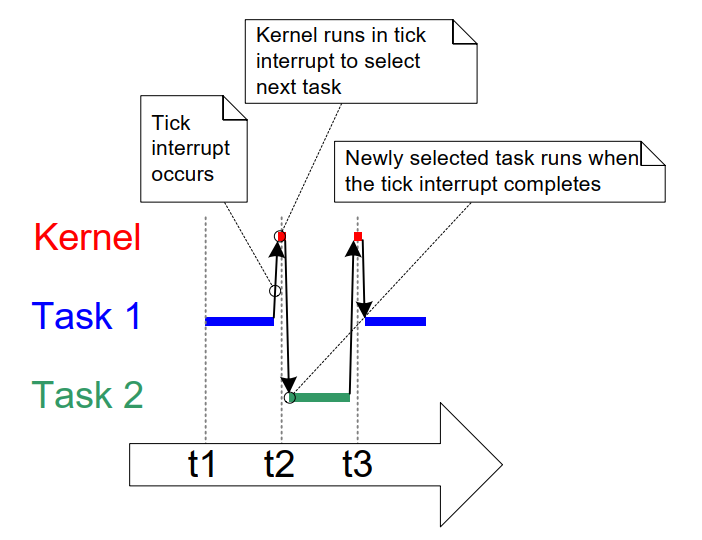
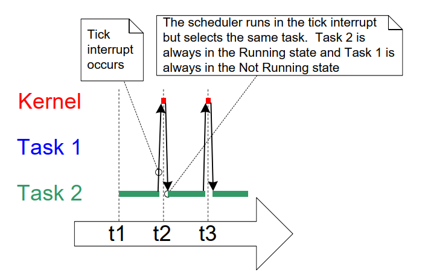

4.6 Time Measurement and the Tick Interrupt
Section 4.12, Scheduling Algorithms, describes an optional feature called 'time slicing'. Time slicing was used in the examples presented so far, and is the behavior observed in the output they produced. In the examples, both tasks were created at the same priority, and both tasks were always able to run. Therefore, each task executed for a 'time slice', entering the Running state at the start of a time slice, and exiting the Running state at the end of a time slice. In Figure 4.3, the time between t1 and t2 equals a single time slice.
The scheduler executes at the end of each time slice to select the next
task to run1. A periodic interrupt, called the 'tick interrupt', is
used for this purpose. The configTICK_RATE_HZ compile-time configuration
constant sets the frequency of the tick interrupt, and so also the
length of each time slice. For example, setting configTICK_RATE_HZ to
100 (Hz) results in each time slice lasting 10 milliseconds. The time
between two tick interrupts is called the 'tick period'—so one time
slice equals one tick period.
Figure 4.4 expands on Figure 4.3 to also show the execution of the scheduler. In Figure 4.4, the top line shows when the scheduler is executing, and the thin arrows show the sequence of execution from a task to the tick interrupt, then from the tick interrupt back to a different task.
The optimal value for configTICK_RATE_HZ depends on the application,
although a value of 100 is typical.
 Figure 4.4 The execution sequence expanded to show the tick interrupt executing
FreeRTOS API calls specify time in multiples of tick periods, often
referred to simply as 'ticks'. The pdMS_TO_TICKS() macro converts a time
specified in milliseconds into a time specified in ticks. The resolution
available depends on the defined tick frequency, and pdMS_TO_TICKS()
cannot be used if the tick frequency is above 1KHz (if
configTICK_RATE_HZ is greater than 1000). Listing 4.10 shows how to use
pdMS_TO_TICKS() to convert a time specified as 200 milliseconds into an
equivalent time specified in ticks.
/*
* pdMS_TO_TICKS() takes a time in milliseconds as its only parameter,
* and evaluates to the equivalent time in tick periods. This example shows
* xTimeInTicks being set to the number of tick periods that are equivalent
* to 200 milliseconds.
*/
TickType_t xTimeInTicks = pdMS_TO_TICKS( 200 );
Listing 4.10 Using the pdMS_TO_TICKS() macro to convert 200 milliseconds into an equivalent time in tick periods
Using pdMS_TO_TICKS() to specify times in milliseconds, rather than
directly as ticks, ensures times specified within the application do not
change if the tick frequency is changed.
The 'tick count' is the total number of tick interrupts that have occurred since the scheduler started, assuming the tick count has not overflowed. User applications do not have to consider overflows when specifying delay periods, as FreeRTOS manages time consistency internally.
Section 4.12: Scheduling Algorithms describes configuration constants which affect when the scheduler will select a new task to run and when a tick interrupt will execute.
Example 4.3 Experimenting with priorities
The scheduler will always ensure the highest priority task that can run is the task selected to enter the Running state. The examples so far created two tasks at the same priority, so both entered and exited the Running state in turn. This example looks at what happens when the tasks have different priorities. Listing 4.11 shows the code used to create the tasks, the first with priority 1, and the second with priority 2. The single function that implements both tasks has not changed; it still periodically prints a string, using a null loop to create a delay.
/*
* Define the strings that will be passed in as the task parameters.
* These are defined const and not on the stack to ensure they remain valid
* when the tasks are executing.
*/
static const char * pcTextForTask1 = "Task 1 is running";
static const char * pcTextForTask2 = "Task 2 is running";
int main( void )
{
/* Create the first task with a priority of 1. */
xTaskCreate( vTaskFunction, /* Task Function */
"Task 1", /* Task Name */
1000, /* Task Stack Depth */
( void * ) pcTextForTask1, /* Task Parameter */
1, /* Task Priority */
NULL );
/* Create the second task at a higher priority of 2. */
xTaskCreate( vTaskFunction, /* Task Function */
"Task 2", /* Task Name */
1000, /* Task Stack Depth */
( void * ) pcTextForTask2, /* Task Parameter */
2, /* Task Priority */
NULL );
/* Start the scheduler so the tasks start executing. */
vTaskStartScheduler();
/* Will not reach here. */
return 0;
}
Listing 4.11 Creating two tasks at different priorities
Figure 4.5 shows the output produced by Example 4.3.
The scheduler will always select the highest priority task that can run. Task 2 has a higher priority than Task 1 and can always run; therefore, the scheduler always selects Task 2, and Task 1 never executes. Task 1 is said to be 'starved' of processing time by Task 2—it can't print its string because it is never in the Running state.
C:\Temp>rtosdemo
Task 2 is running
Task 2 is running
Task 2 is running
Task 2 is running
Task 2 is running
Task 2 is running
Task 2 is running
Task 2 is running
Task 2 is running
Task 2 is running
Task 2 is running
Task 2 is running
Task 2 is running
Task 2 is running
Task 2 is running
Figure 4.5 Running both tasks at different priorities
Task 2 can always run because it never has to wait for anything—it is either cycling around a null loop or printing to the terminal.
 Figure 4.6 The execution pattern when one task has a higher priority than the other from Example 4.3
-
It is important to note that the end of a time slice is not the only place that the scheduler can select a new task to run. As we will demonstrate throughout this book, the scheduler will also select a new task to run immediately after the currently executing task enters the Blocked state, or when an interrupt moves a higher priority task into the Ready state. ↩